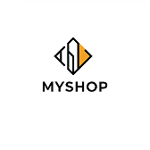

Bienvenue sur documentation officielle de MyShop

Description du Programme
Ce programme est une solution de gestion de stock complète, conçue pour optimiser et sécuriser les opérations d'inventaire au sein des entreprises. Il s'appuie sur une architecture client/serveur robuste, garantissant une performance et une fiabilité optimales, même dans des environnements multi-utilisateurs.
Fonctionnalités Principales
- Gestion centralisée des stocks : Suivi en temps réel des entrées, sorties et mouvements de stock, avec une visibilité complète sur les niveaux d'inventaire.
- Architecture client/serveur : Permet un accès multi-utilisateurs simultané, avec une gestion efficace des données et des transactions.
- Sécurité renforcée : Mise en œuvre de protocoles de sécurité avancés pour protéger les données sensibles et prévenir les accès non autorisés.
- Gestion des utilisateurs et des accès : Contrôle précis des permissions et des rôles des utilisateurs, assurant une gestion sécurisée des données.
- Portabilité : Conception multiplateforme permettant une utilisation sur divers systèmes d'exploitation (Windows, macOS, Linux).
- Rapports et analyses : Génération de rapports détaillés sur les niveaux de stock, les mouvements de produits et les tendances de vente.
- Alertes et notifications : Configuration d'alertes personnalisées pour les seuils de stock critiques, les commandes en attente et les anomalies.
- Gestion des fournisseurs et des commandes : Suivi des commandes fournisseurs, gestion des réceptions et des retours.
Avantages
- Optimisation des coûts : Réduction des coûts de stockage et des pertes dues aux ruptures de stock ou aux excédents.
- Amélioration de l'efficacité : Automatisation des tâches répétitives et simplification des processus de gestion de stock.
- Sécurité des données : Protection des informations sensibles grâce à des mesures de sécurité avancées.
- Flexibilité et adaptabilité : Conception modulaire permettant une personnalisation et une adaptation aux besoins spécifiques de chaque entreprise.
- Accessibilité multi-utilisateurs : Collaboration facilitée entre les différents départements et utilisateurs.
Public Cible
Ce programme s'adresse aux entreprises de toutes tailles, des PME aux grandes entreprises, qui souhaitent optimiser leur gestion de stock et améliorer leur efficacité opérationnelle. Il est particulièrement adapté aux secteurs de la distribution, de la logistique, de la production et du commerce de détail.
Configuration Requise
- Bibliothèques : Python 3.10, Flask , Matplotlib, Reportlab
Historique des Versions
- Version 1.0.0 : 2024-10-27 - Première version
- Version 0.9.0 : 2024-10-20 - Version bêta